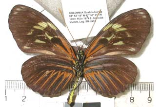
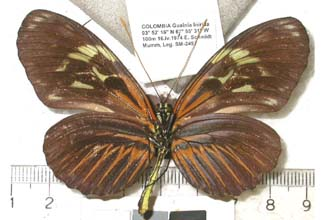
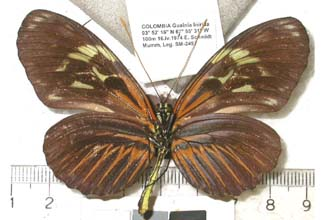
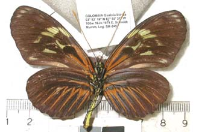

To next hybrid
To previous hybrid
NOTES No: 14 Genus of species 1: Heliconius Species 1: hecale? Subspecies of species 1: ? Genus of species 2: Heliconius Species 2: elevatus Subspecies of species 2: zoelleri Sex: f Country: Colombia Locality: Guainia: Puerto Inírida Year: 1974 Photo no.: hecele01 Named hybrid: Collection: Schmidt-Mumm/Instituto Alexander von Humboldt Collector: E. Schmidt-Mumm Author/publication: Velez & Salazar 1991: p. 132 Notes: BC->elevatus? on basis of phenotype; hecale as parent on basis of scalloped hindwing margin
Last updated: 30 July 2006